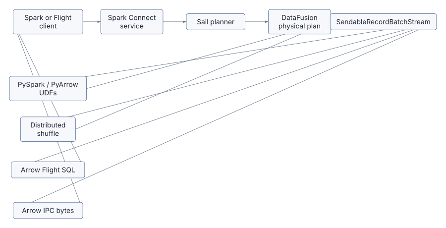
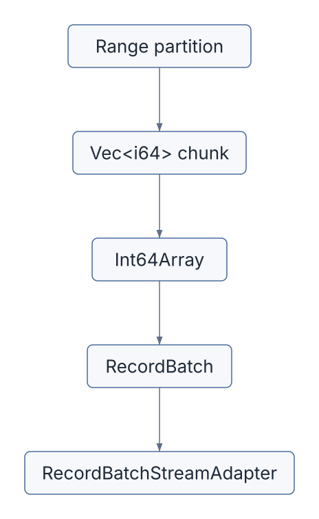
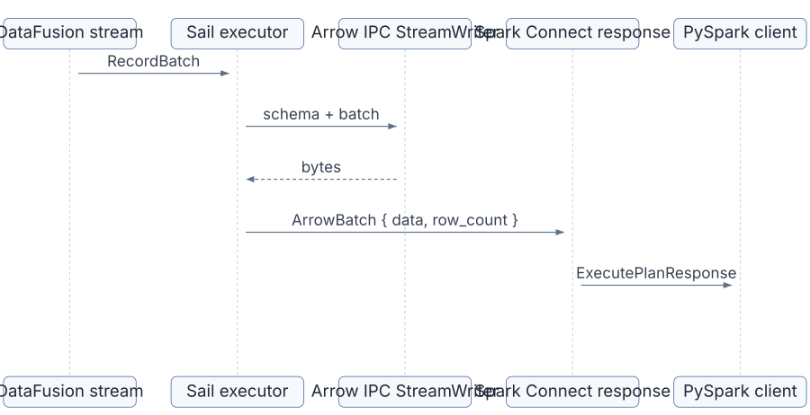
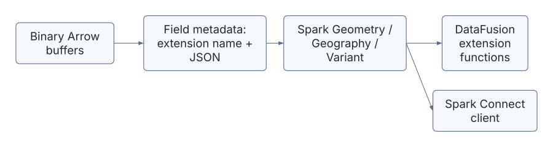
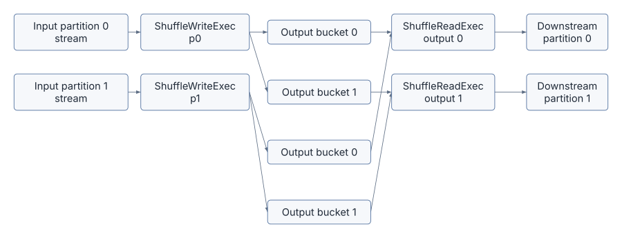
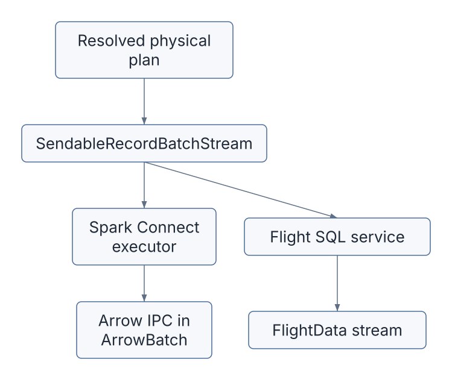
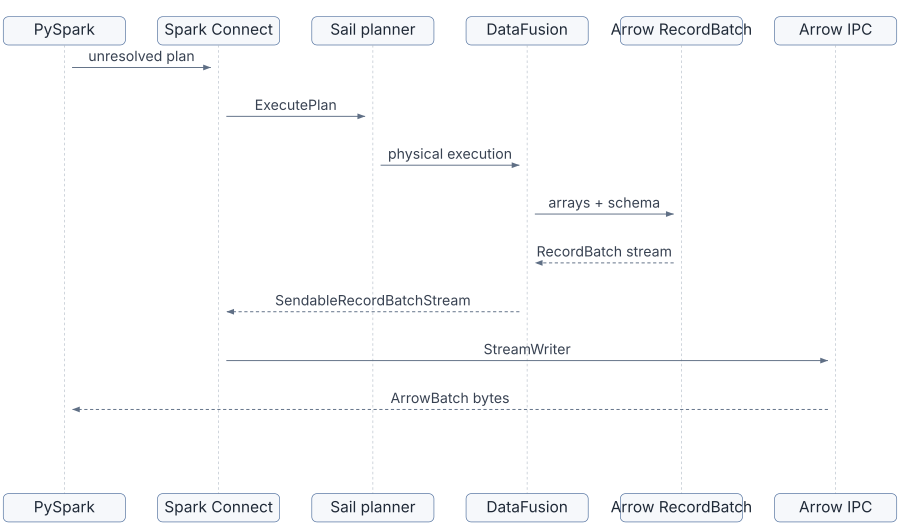

Apache Arrow is the data plane hiding in plain sight throughout Sail.
Spark Connect gives Sail a protocol for receiving unresolved Spark plans and returning results to Spark clients. DataFusion gives Sail an optimizer and an execution engine. PySpark compatibility gives Sail a Python surface area. The distributed runtime gives Sail a way to split work across workers. Arrow is the format that lets those pieces hand data to each other without constantly reinterpreting rows.
In Sail, Arrow is not merely an output serialization format. It is the shape of execution itself:
RecordBatch
streams.SendableRecordBatchStream as Arrow
Flight data.This chapter is about learning Arrow through Sail’s code. We will use the official Arrow documentation as the reference vocabulary, then map that vocabulary to the concrete Rust modules that make Sail work.
Keep these open while reading the chapter:
The Arrow columnar format specification is the most important one. It defines the memory layout, data types, schemas, record batches, and IPC messages. The Flight specification explains the network layer built on Arrow IPC and gRPC. The PyArrow documentation matters because Sail crosses the Rust/Python boundary for PySpark UDFs.
Here are the main code paths for this chapter:
| Area | Files | Arrow role |
|---|---|---|
| Spark Connect result streaming | crates/sail-spark-connect/src/executor.rs |
Converts RecordBatch values into Spark Connect
ArrowBatch messages using Arrow IPC |
| Spark schema conversion | crates/sail-spark-connect/src/proto/data_type_arrow.rs |
Maps Arrow fields and data types back to Spark Connect data types |
| Python UDF conversion | crates/sail-python-udf/src/conversion.rs |
Converts Rust Arrow objects to/from PyArrow objects |
| PySpark UDF execution | crates/sail-python-udf/src/udf/pyspark_udf.rs |
Invokes Python functions with Arrow arrays and receives Arrow data |
| Distributed shuffle write | crates/sail-execution/src/plan/shuffle_write.rs |
Partitions RecordBatch streams into shuffle
outputs |
| Distributed shuffle read | crates/sail-execution/src/plan/shuffle_read.rs |
Opens shuffle locations and merges RecordBatch
streams |
| Arrow Flight SQL | crates/sail-flight/src/service.rs |
Serves DataFusion output streams over Flight SQL |
| Physical plan examples | crates/sail-physical-plan/src/range.rs |
Builds batches from Arrow arrays |
| Row round-robin repartition | crates/sail-physical-plan/src/repartition.rs |
Uses Arrow compute kernels to split batches |
| GeoArrow extension type | crates/sail-common/src/geoarrow/extension.rs |
Defines Arrow extension metadata for WKB geometry/geography |
The short version is:

Arrow is the contract between almost every box in that diagram.
Arrow is a columnar memory format. A table is not stored as a sequence of row objects. It is stored as arrays, one array per column, with a schema describing the column names, logical types, nullability, metadata, and nested structure.
The key types you see in Sail are:
| Rust type | Meaning in Sail |
|---|---|
ArrayRef |
Shared reference to an immutable Arrow array |
ArrayData |
Low-level array buffers and metadata, useful at FFI boundaries |
DataType |
Arrow logical type such as Int64, Utf8,
Struct, Map, Timestamp |
Field |
One named column, including data type, nullability, and metadata |
Schema |
Ordered collection of fields plus schema metadata |
SchemaRef |
Shared Arc<Schema> |
RecordBatch |
Equal-length arrays plus a schema; the basic execution unit |
RecordBatchStream |
Async stream of RecordBatch values |
SendableRecordBatchStream |
Boxed, pinned, sendable DataFusion batch stream |
The official Arrow format documentation describes a record batch as
an ordered collection of arrays with the same length, described by a
schema. DataFusion’s Arrow introduction adds the execution intuition: a
RecordBatch is columnar inside, but externally it behaves
like a row chunk that can be streamed, partitioned, and scheduled.
That dual nature explains why Arrow fits distributed query processing so well:
Arc Shows Up
EverywhereIn Sail’s Rust code, Arrow objects are usually wrapped in
Arc.
For example, SchemaRef is an
Arc<Schema>, and ArrayRef is an
Arc<dyn Array>. This reflects the Arrow memory model:
arrays are immutable once built, so it is cheap and safe to share them
across operators, streams, and async tasks.
When a physical operator needs to produce a new batch, it usually creates new array references and a shared schema:
let id_array: ArrayRef = Arc::new(Int64Array::from(x));
let batch = RecordBatch::try_new(projected_schema.clone(), vec![id_array])?;That pattern appears in RangeExec in
crates/sail-physical-plan/src/range.rs. The range source
partitions a numeric range, builds an Int64Array for each
chunk, then wraps the chunks in RecordBatch values.
The important lesson is that Sail does not need an internal row object for this operator. The execution unit is already Arrow-native:

Most query engines have a concept like “a batch of rows.” In Sail,
that concept is concretely Arrow’s RecordBatch.
Look at the signature of DataFusion physical execution:
fn execute(
&self,
partition: usize,
context: Arc<TaskContext>,
) -> Result<SendableRecordBatchStream>This shape appears across Sail physical plan nodes. A plan node is executed for one output partition, and the result is a stream of Arrow batches. Sail can then compose operators by chaining streams.
RangeExec is a good first example:
RANGE_BATCH_SIZE.RecordBatch values.RecordBatchStreamAdapter.The same type shows up at much larger boundaries:
ExecutorTaskContext owns a
SendableRecordBatchStream.SendableRecordBatchStream.SendableRecordBatchStream.SendableRecordBatchStream.ColumnarValue values into
Arrow arrays.Once you learn to recognize SendableRecordBatchStream,
you can follow data through Sail.
Spark Connect uses Protobuf messages for the control protocol, but tabular results are encoded as Arrow batches.
In crates/sail-spark-connect/src/executor.rs, the
executor has this batch enum:
pub enum ExecutorBatch {
ArrowBatch(ArrowBatch),
SqlCommandResult(Box<SqlCommandResult>),
...
Schema(Box<DataType>),
Complete,
}For query output, the important variants are:
Schema(Box<DataType>)ArrowBatch(ArrowBatch)CompleteThe executor first converts the DataFusion stream schema into a Spark schema:
let schema = to_spark_schema(context.stream.schema())?;
let out = ExecutorOutput::new(ExecutorBatch::Schema(Box::new(schema)));Then it repeatedly reads Arrow RecordBatch values from
the stream:
while let Some(batch) = context.next().await? {
let batch = to_arrow_batch(&batch)?;
let out = ExecutorOutput::new(ExecutorBatch::ArrowBatch(batch));
tx.send(out).await?;
}The conversion to Spark Connect’s ArrowBatch is
compact:
pub(crate) fn to_arrow_batch(batch: &RecordBatch) -> SparkResult<ArrowBatch> {
let mut output = ArrowBatch::default();
{
let cursor = Cursor::new(&mut output.data);
let mut writer = StreamWriter::try_new(cursor, batch.schema().as_ref())?;
writer.write(batch)?;
output.row_count += batch.num_rows() as i64;
writer.finish()?;
}
Ok(output)
}This is Arrow IPC streaming format. The official Arrow columnar
documentation describes IPC streams as schema followed by record batch
messages and optional dictionary batches. Sail uses
StreamWriter to produce that payload and stores the bytes
inside Spark Connect’s ArrowBatch.data.
The relationship looks like this:

The executor also sends empty batches in two cases:
That is why ExecutorTaskContext::next can return
RecordBatch::new_empty(self.stream.schema()). The stream
contract remains Arrow-shaped even when the batch contains zero
rows.
Sail must speak Arrow internally and Spark externally. The conversion
from Arrow types to Spark Connect types lives in
crates/sail-spark-connect/src/proto/data_type_arrow.rs.
The central conversion is:
impl TryFrom<adt::DataType> for DataTypeIt maps Arrow types such as:
adt::DataType::Boolean -> Spark
Booleanadt::DataType::Int32 -> Spark
Integeradt::DataType::Int64 -> Spark Longadt::DataType::Utf8 -> Spark
Stringadt::DataType::Date32 -> Spark
Dateadt::DataType::Struct(fields) -> Spark
Structadt::DataType::List(field) -> Spark
Arrayadt::DataType::Map(field, _) -> Spark
MapThe code also documents where the mapping is lossy or constrained.
For example, Spark Char or VarChar may become
Arrow string-like data and then come back as Spark String.
Timestamp precision is another important compatibility choice: the
conversion accepts microsecond timestamps and rejects other timestamp
units in several branches.
This is a crucial extension lesson. Arrow is a strong physical and logical format, but it is not identical to Spark’s type system. If an extension needs Spark-specific semantics, it must preserve them deliberately, often through:
Arrow supports extension types: a field can have a physical storage type plus metadata that names a higher-level logical meaning.
Sail already uses this idea in
crates/sail-common/src/geoarrow/extension.rs:
pub struct GeoArrowWkbType {
pub metadata: GeoArrowMetadata,
}
impl GeoArrowWkbType {
pub const NAME: &'static str = "geoarrow.wkb";
}The extension stores geometry/geography values as binary WKB, while metadata captures CRS and edge semantics:
pub struct GeoArrowMetadata {
pub edges: Option<GeoArrowEdges>,
pub crs: Option<GeoArrowCrs>,
}The storage type check is strict:
match data_type {
DataType::Binary | DataType::LargeBinary | DataType::BinaryView => Ok(()),
data_type => Err(...),
}Then the Spark Connect type conversion recognizes this extension:
} else if extension_type_name == Some(GeoArrowWkbType::NAME) {
let ext = field.try_extension_type::<GeoArrowWkbType>()?;
let meta: SparkGeoMetadata = ext.metadata.try_into()?;
...
}Sail maps GeoArrow metadata to Spark geometry or geography. If
edges is present, Sail treats the value as geography. If
edges is absent, it treats the value as geometry. CRS
metadata becomes Spark SRID values for supported CRS strings.
The same file recognizes
parquet_variant_compute::VariantType, mapping that Arrow
extension to Spark Variant.
This is the most concrete preview of the final extensions chapter. An extension does not have to invent a new internal data plane. It can often use Arrow’s existing storage plus extension metadata:

That architecture keeps data compatible with Arrow tooling while preserving domain meaning.
The Python side of Sail depends heavily on Arrow because PySpark UDFs should not have to receive rows one Python object at a time.
The conversion layer in
crates/sail-python-udf/src/conversion.rs uses the
arrow_pyarrow crate:
use arrow_pyarrow::{FromPyArrow, ToPyArrow};Sail implements TryToPy for:
&DataTypeDataTypeArrayRefVec<ArrayRef>&SchemaSchemaRefRecordBatchAnd it implements TryFromPy for:
ArrayDataRecordBatchFor arrays, the conversion uses the underlying Arrow
ArrayData:
self.iter()
.map(|x| x.into_data().to_pyarrow(py))
.collect::<PyResult<Vec<_>>>()That is a big deal. It means Sail is intentionally crossing the language boundary with Arrow arrays, not with ad hoc serialized Python values.
The UDF invocation path in
crates/sail-python-udf/src/udf/pyspark_udf.rs makes that
practical:
let args: Vec<ArrayRef> = ColumnarValue::values_to_arrays(&args)?;
let output = udf.call1(py, (args.try_to_py(py)?, number_rows))?;
let data = ArrayData::try_from_py(py, &output)?;
let array = cast(&make_array(data), &self.output_type)?;The steps are:
ColumnarValue arguments to Arrow
arrays.ArrayData.The official PyArrow RecordBatch API is useful for
understanding the Python objects Sail is interoperating with. PyArrow
exposes schemas, columns, row counts, zero-copy slices, filters,
take, conversion from arrays, and IPC serialization
methods. Sail’s Rust side uses the same conceptual model, but with Rust
ownership and type checks.
The PySpark UDF kind enum includes several execution modes:
pub enum PySparkUdfKind {
Batch,
ArrowBatch,
ScalarPandas,
ScalarPandasIter,
ScalarArrow,
ScalarArrowIter,
}The comment in the code calls out Spark 4.0 Arrow-native scalar UDF types. The important distinction is:
From an engine architecture perspective, this is exactly the direction Sail wants. Every conversion into Python objects costs time and memory. Every operator that can remain Arrow-native preserves vectorization and avoids unnecessary row materialization.
The performance guide at docs/guide/udf/performance.md
makes the same point: Arrow UDFs avoid copying data into row-oriented
Python objects and let the Rust engine and Python function share Arrow
data through the Arrow/PyArrow boundary.
Distributed query processing needs exchanges. A join, aggregation, sort, or repartition may require data from one set of workers to move to another set of workers.
In Sail, the exchange unit is still RecordBatch.
The write side is
crates/sail-execution/src/plan/shuffle_write.rs.
ShuffleWriteExec wraps an input physical plan and a desired
output partitioning. When execute is called for an input
partition, it:
RecordBatch values from the child stream.The core loop is:
while let Some(batch) = stream.next().await {
let batch = batch?;
let mut partitions: Vec<Option<RecordBatch>> = vec![None; partition_sinks.len()];
partitioner.partition(batch, |p, batch| {
partitions[p] = Some(batch);
Ok(())
})?;
...
}The read side is
crates/sail-execution/src/plan/shuffle_read.rs.
ShuffleReadExec has a set of read locations for each output
partition. When executed, it opens all relevant task streams and merges
them:
let futures = locations
.iter()
.map(|location| reader.open(location, schema.clone()));
let streams = try_join_all(futures).await?;
Ok(Box::pin(MergedRecordBatchStream::new(schema, streams)))That gives downstream operators a normal
SendableRecordBatchStream again. The shuffle itself is an
implementation detail hidden between write and read nodes.

Notice the absence of a Sail-specific row format. The shuffle API talks in task stream locations, but the payload remains Arrow batches.
Hash partitioning can delegate to DataFusion’s
BatchPartitioner. Sail also has a row round-robin
partitioner in
crates/sail-physical-plan/src/repartition.rs.
The logic is a useful Arrow lesson:
let schema = batch.schema();
let mut indices = vec![Vec::new(); self.num_partitions];
for row_index in 0..batch.num_rows() {
let partition = (self.next_idx + row_index) % self.num_partitions;
indices[partition].push(row_index as u32);
}
...
let indices_array: PrimitiveArray<UInt32Type> = partition_indices.into();
let columns = take_arrays(batch.columns(), &indices_array, None)?;
let partition_batch =
RecordBatch::try_new_with_options(schema.clone(), columns, &options)?;Sail does not loop over cells and rebuild rows. It builds an Arrow
array of row indices and uses Arrow compute’s take_arrays
to select rows from every column. The output is one
RecordBatch per non-empty destination partition.
This is the practical meaning of vectorized execution: even operations that are row-directed can often be implemented as array operations.
Sail also exposes a Flight SQL service in
crates/sail-flight/src/service.rs. The official Arrow
Flight protocol describes Flight as an RPC framework for
high-performance Arrow data services, built on gRPC and Arrow IPC. It is
organized around streams of Arrow record batches, with metadata methods
for discovering and retrieving streams.
That maps cleanly to Sail’s service.
For a SQL statement, get_flight_info_statement:
SendableRecordBatchStream.FlightInfo with a ticket.Then do_get_statement:
FlightDataEncoderBuilder.The encoding step is:
let output = FlightDataEncoderBuilder::new()
.with_schema(schema)
.build(output)
.map(|result| result.map_err(|e| Status::internal(format!("encoding error: {e}"))));The same DataFusion output can therefore leave Sail through two different protocol doors:

This is a powerful architectural property. Sail’s execution engine does not need separate data representations for Spark Connect and Flight SQL. Protocols wrap the same Arrow stream abstraction.
It is easy to blur Arrow IPC and Arrow Flight. Sail uses both, so it helps to separate them:
| Concept | In Arrow | In Sail |
|---|---|---|
| In-memory format | Column buffers, validity bitmaps, offsets, schemas | ArrayRef, SchemaRef,
RecordBatch |
| IPC stream/file format | Serialized schema, dictionaries, record batches | Spark Connect ArrowBatch.data via
StreamWriter |
| Flight | gRPC service protocol carrying Arrow data streams | SailFlightSqlService with
FlightDataEncoderBuilder |
| PyArrow bridge | Python implementation of Arrow data structures | arrow_pyarrow conversions for UDFs |
Think of it this way:
Sail benefits because these layers are designed to compose.
Imagine a PySpark client runs:
spark.range(0, 5).selectExpr("id + 10 as value").collect()The high-level flow is:
SendableRecordBatchStream.RangeExec produces an Arrow
Int64Array.value.RecordBatch.StreamWriter encodes each batch as Arrow IPC
bytes.ArrowBatch messages to the
client.The data path can be described without a single row class:

That is the central architecture of Sail result execution.
Arrow gives Sail a powerful data representation, but it does not solve every problem.
Arrow does not decide:
Those are Sail architecture problems. Arrow is the shared data language that makes the solutions simpler and faster.
This distinction matters for extensions. An extension proposal should not merely say “use Arrow.” It should identify:
The GeoArrow code suggests a reusable pattern for future extensions:
For example, a geospatial extension can store WKB as
Binary and use geoarrow.wkb metadata for CRS
and edge semantics. A variant extension can store variant-encoded bytes
and preserve logical type identity with an Arrow extension name. A
machine-learning vector extension might store
FixedSizeList<Float32> plus metadata for dimension
and metric assumptions.
The best extensions feel native to Arrow rather than bolted onto it.
RecordBatch Means Row-OrientedA RecordBatch is a batch of rows from the outside, but
internally it is columnar. Operators should usually work
column-by-column.
Schema and field metadata can carry compatibility-critical information. Sail’s UDT and GeoArrow conversions depend on metadata to recover Spark semantics.
Python integration should use PyArrow whenever possible. Converting every row into Python objects defeats the point of using a columnar engine.
Empty batches are still meaningful. They carry schema, heartbeats, and protocol state. Sail’s Spark Connect executor intentionally emits empty batches in some cases.
Arrow and Spark type systems overlap but are not identical. Unsupported units, dictionary encodings, unions, and lossy string-like conversions must be handled explicitly.
To build intuition, trace one RecordBatch through the
code:
crates/sail-physical-plan/src/range.rs.Int64Array::from(x) call.RecordBatch::try_new call.SendableRecordBatchStream.crates/sail-spark-connect/src/executor.rs.while let Some(batch) = context.next().await?.to_arrow_batch.StreamWriter::try_new,
writer.write, and writer.finish.Then repeat the exercise for Flight SQL:
crates/sail-flight/src/service.rs.service.runner().execute(&ctx, plan).SailFlightSqlState.do_get_statement.FlightDataEncoderBuilder.After these two traces, you will understand the two biggest Arrow output paths in Sail.
For Python UDFs:
crates/sail-python-udf/src/udf/pyspark_udf.rs.ColumnarValue::values_to_arrays.args.try_to_py(py).crates/sail-python-udf/src/conversion.rs.TryToPy implementation for
&[ArrayRef].into_data().to_pyarrow(py).invoke_with_args.ArrayData::try_from_py.cast(&make_array(data), &self.output_type).This is the Arrow/PyArrow bridge in miniature.
The next chapter can now talk about DataFusion with the right foundation. DataFusion is not just a planner that happens to use Arrow. Its physical operators, stream interfaces, expression evaluation, partitioning, and UDF APIs are designed around Arrow batches.
When Sail adds Spark compatibility on top of DataFusion, it repeatedly answers one question:
How do we preserve Spark semantics while keeping the data path Arrow-native?
That question appears in:
Apache Arrow is Sail’s data plane. The most important concrete type
is RecordBatch, and the most important execution
abstraction is SendableRecordBatchStream.
Spark Connect wraps Arrow IPC bytes in Protobuf responses. Flight SQL wraps Arrow streams in the Flight protocol. PySpark UDFs cross the Rust/Python boundary through PyArrow. Distributed shuffle partitions and merges Arrow batch streams. Extension types use Arrow metadata to carry domain-specific logical meaning without abandoning Arrow compatibility.
Once you see Sail as a system that plans Spark-compatible queries but executes Arrow-native streams, the architecture becomes much easier to reason about.